Seventeen themed hearts from CVS Health's public merchandise store, The Heart Collection, plus the plain red original. Each one is a lapel pin for one of CVS's employee groups.
They're grouped by how each heart uses color and pattern. Each group is tagged with the All-Star Studio star style that works the same way.
Parallel stripes are the most direct way to say “these parts belong together.” They read clearly even at pin size.
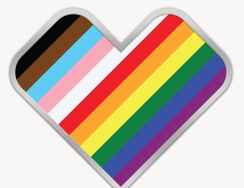
Diagonal stripes in the full progress-flag palette. Eleven colors, still readable because every band runs the same direction.
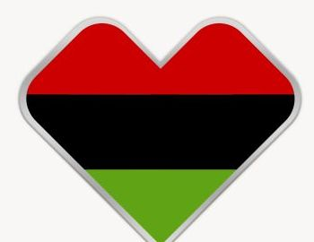
Three flat horizontal bands: red, black, green. The simplest multi-color heart in the set.
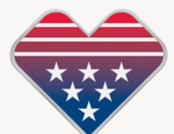
Red-and-white stripes across the top, white stars on a purple-to-navy field below. Bands plus a symbol.
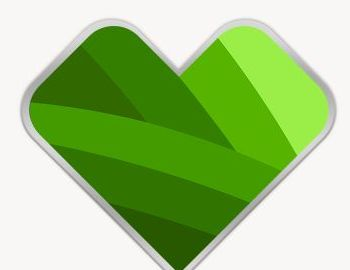
Overlapping diagonal leaf shapes in five greens. Bands that use shade instead of hue.
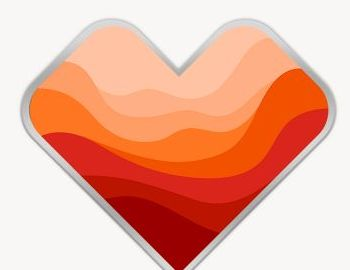
Wavy horizontal layers from peach to deep red, like dunes or a sunset. Bands with a curve.
Lines that fan out from one point give a sense of energy and of everything meeting in the middle.
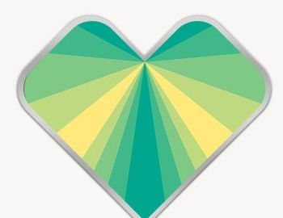
Alternating teal, green, and yellow rays fanning out from the top notch of the heart.
Dividing the shape into a few large pieces gives each color an equal, unmistakable share.
Small tiles let many shapes and shades coexist. This is closest to the planned mosaic style.
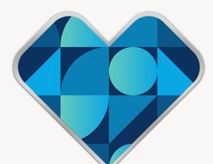
Tiles of circles, half-circles, and triangles in blues and teal. Each tile is a different shape; together they make one heart.
A small pattern repeated across the heart. All-Star Studio has dots and diagonal stripes for now; richer motifs are a later idea.
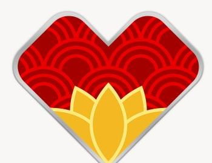
Red wave-scale pattern on top, with a gold lotus rising from the bottom point.
Navy background with orange, blue, and yellow paths that look like a circuit board or transit map.
Purple with rows of rounded vertical bars in blues, like an audio level meter or a crowd of people.
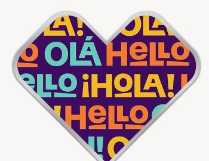
“Hola,” “Hello,” and “Olá” lettering in bright colors on purple. The only heart that uses words.
Smooth color blends and organic overlaps feel calm and modern. Gradients are on the later list for All-Star Studio.
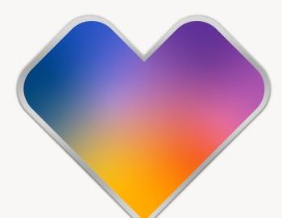
A smooth blend from blue through purple to orange. No lines at all.
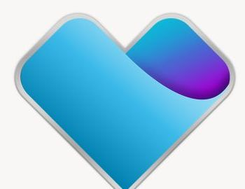
Sky-blue gradient with one purple curl at the upper right, like a wave or a sheltering hand.
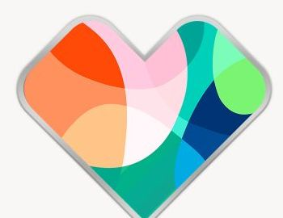
Overlapping translucent blobs in coral, pink, green, and teal.
A figure or object tells the story directly. The rest of the heart becomes background.
White figure in motion over purple sky and green field.